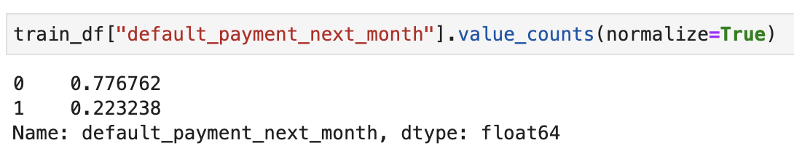
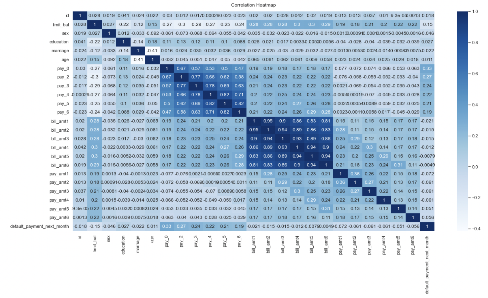
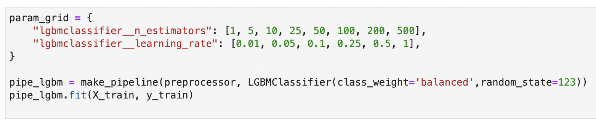
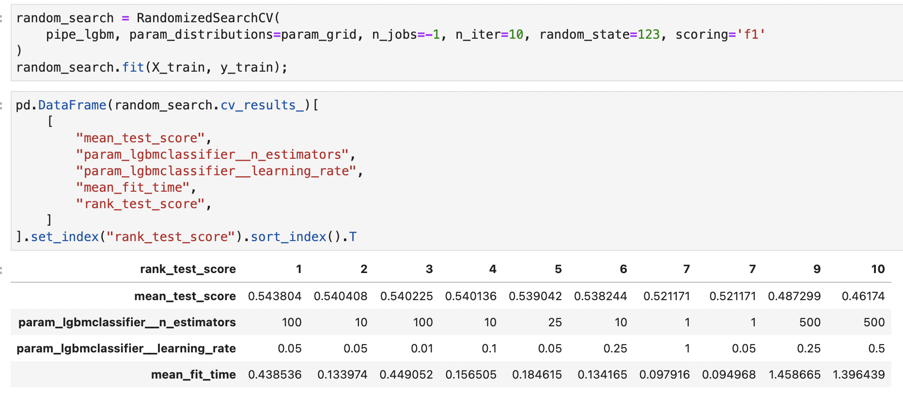
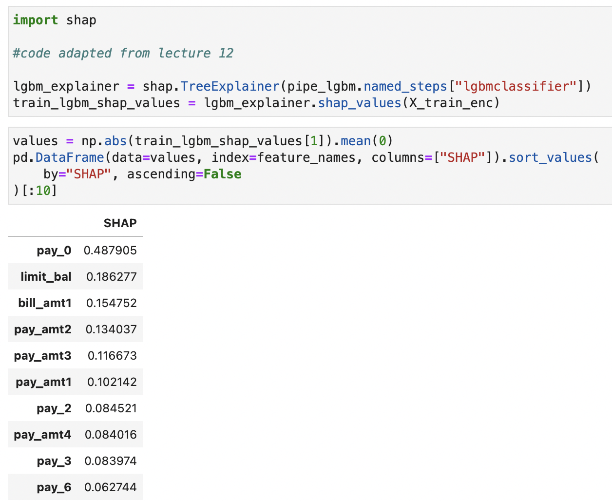
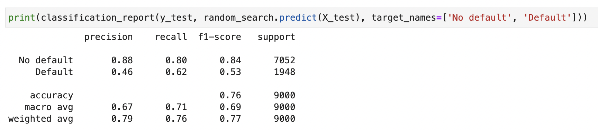

Analysis of default of credit card clients dataset
Problem description
In this mini project, our primary objective is to predict whether a credit card client will default (“True”) or not (“False”), which could potentially motivate the company to adopt appropriate preventative actions. This is often referred to as a binary classification spotting problem. In machine learning, calling “score” by default returns accuracy as a means to measure the quality of the model. However, in this particular problem, it would be beneficial to acquire an in-depth understanding of the errors. For example, false positives (type I errors) is where the model incorrectly spots examples as “will default” and false negatives (type II errors) is where the model fails to spot “will default” examples. Since predicting “True” examples correctly is more important to us, recall (among all positive examples, how many did you identify?) and f1 score (a harmonic mean of precision and recall) may be more relevant than accuracy.
Description of the dataset
This dataset, known as the Default of Credit Card Clients Dataset, contains 30,000 examples and 24 features (including our target column, which is labeled “default.payment.next.month”). Before conducting any machine learning, it is crucial to first split the data into a train set and a test set- this is critical for the training and validation phase, and ensures that we do not violate the golden rule of machine learning, which states that the test data cannot influence training the model in any way. We then perform exploratory analysis to acquire an understanding of what are potentially useful features. It seems that for features education, marriage and pay_x, there are inconsistencies between the documentation and the actual data. For instance, there are 0’s present in all three features but it’s not clear what these represent. As we don’t currently have access to the researchers, it’s difficult to confirm. However, as indicated by a slightly darker blue colour, the heat map below (Figure 2) suggests there is a decent correlation between the pay_x features, education and our target; thus, it makes sense for these features to participate in the training phase of the model. We drop “marriage”, “sex” to avoid any biases in our model and “id” as they are unique identifiers and unlikely to serve a meaningful purpose. Finally, we see that class imbalance exists within the dataset (see Figure 1); this will influence how we might train our model in the next stage.
Figure 1: Class imbalance

Figure 2: Correlation Heatmap

Description of the model
After making comparisons between a baseline and various appropriate classifiers, the chosen model was LightGBM. LightGBM is a gradient boosted tree model that is particularly notable for its speed. Since from our initial data analyses, we discovered that there is class imbalance, we address this issue by setting the class_weight to “balanced”. We further optimize its hyperparameters by using RandomizedSearchCV, which is a particularly useful method when we have many parameters to try. Through additional tuning, we are able to produce a slightly higher test f1 score of 0.544. Moreover, it is beneficial to evaluate which features our model considers to be important. For instance, by using a tool called shap, we are given an explanation of the impact of important features. In this case, the top three are pay_0, limit_bal and bill_amt1 (Figure 3).
Figure 3: RandomSearchCV with LGBM results


Figure 4: Feature importance using shap

Results
To evaluate our results, we call score on the test set. Using the metric “f1 score”, our final test score is 0.53, which also agrees with the validation scores we obtained during the training phase (approximately 0.544). We trust our results, as we have a fairly large dataset, which means overfitting (which is when the model learns the detail and noise in the training data too well, thus negatively impacting its performance on new, unseen data) is less likely to be a concern and our test score is robust. Moreover, our recall for the class we are interested in (“True/Default") is fairly decent (0.62). This means that the business may be able to more effectively make decisions and perhaps send reminders to clients regarding timely payments or offer suitable alternatives. By improving the recall score, it could also provide a more objective means to determine whether an individual would be a responsible customer. Below is a classification report that illustrates these relevant numbers (Figure 5).
Overall, this project serves as a solid foundation for any future exploration. Although the less relevant “False/No default” class seems to have achieved superior scores, we need to keep in mind that is very possible for our results to be further improved through other interesting techniques, such as feature engineering and adjusting prediction thresholds. But we’ll save these ideas for our next machine learning adventure!
Figure 5: Classification report

Caveats
It is possible that our results may be misleading as we do not have access to the researchers responsible for assembling this dataset. Consequently, we may have misinterpreted how the features were encoded, which may have led us to prioritizing the wrong features. As illustrated in Figure X, it is also important to reiterate that class imbalance exists within this dataset. A mere 22% of the examples in the training set belong to the “True” class. While we have attempted to handle the imbalance through setting class_weight to ‘balanced’, there are potentially other more efficient methods to address this issue (e.g. through undersampling or oversampling, or making the weight of the positive class more important).